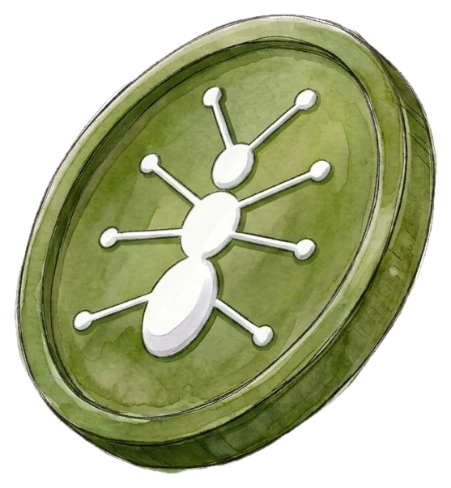

60+ video models
Video
Kling, Veo, Seedance,
Runway, Wan, MiniMax,
Grok Imagine, LTX
- MiniMax H3
- $0.011/s
- Veo 3.1 Fast
- $0.061/s

Antseed for creators
Create video, images and voice with leading AI models.
All through one Antseed key.
Solution
Antseed connects your apps and agents to AI services through a peer-to-peer network.
One key for video, image and voice models, at lower prices.
60+ video models
Kling, Veo, Seedance,
Runway, Wan, MiniMax,
Grok Imagine, LTX
35+ image models
Flux, GPT Image, Nano Banana,
Seedream, Recraft,
Ideogram
Voice models
ElevenLabs Turbo,
xAI TTS,
Qwen TTS
Solution
You need the hero shot by 2am, but generation keeps failing.
Antseed reroutes a failed request so you can keep editing.
Keep the same model and prompt
Retry through another compatible provider
Use the same key and endpoint
Privacy: Antseed does not store your prompts
Veo · your hero shot
The request fails at this provider
Same model and prompt · compatible provider
Response returned through the same endpoint
Reduce dependency on 1 Provider
Solution
Connect once through the Antseed Gateway. Access video, image and voice models from one endpoint.
Connect your workflow
Use models across providers.
Keep one integration for the whole cut.
Bring in the team
Issue individual keys when needed.
Set a budget for each editor.
Keep the overview
See usage and spend together.
Keep your choice of providers.
Value Prop
The same 2am deadline, with fewer places to lose time.
Use provider rates without stacking subscriptions.
Video, image and voice models through one Antseed endpoint.
A failed request reroutes with the same model and prompt.
Per-editor keys, budgets and usage without shared logins.
Antseed does not store prompts. Your selected provider processes them; its data policy applies.

Points determine weekly ANTS rewards; referrals can add rewards. Terms apply.
Network Stats
Snapshot · 18 Nov 2026, 12:50 UTC
View AntSeedStatsYour turn
Built on Antseed’s provider network. You keep your choice of models.
Pick a scene from
your next project.
See the output with simplified UX,
Compare the usage bill
Use the workflow with your team.
Ship your next video.
Arrow keys to navigate · F fullscreen